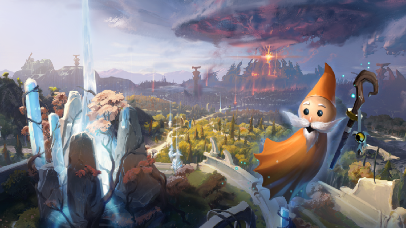

Every day, millions of players worldwide enter the battle as one of over a hundred Dota Heroes in a 5v5 team clash. Dota is the deepest multi-player action RTS game ever made and there's always a new strategy or tactic to discover. It's completely free to play and always will be – start defending your ancient now.

Tomorrow marks the launch of DOTA: Dragon’s Blood on Netflix. With the surrounding excitement, it’s a good time to introduce a comprehensive update to the new player experience to help guide any potential newcomers as they join up to play. As the community knows, depth and discovery are hallmarks of Dota. They're why we play. However, that depth also brings a vast number of new things to process and absorb, and the first steps of Dota discovery sometimes feel overwhelming. It's true that the highs of Dota are surprising and joyous, but for new players it's often difficult to sift through all the information and find clear paths to positive results. Today's update aims to help with that. Because the roads to victory in Dota are many, there are tons of different ways to learn and play. Some players benefit from learning the ropes with friends from the start, while others love to absorb as much information on their own before joining the multiplayer fray. Overall, different players have different needs, and we've found that linear tutorials alone aren't effective at helping people learn the game. Instead, we think a mixture of diverse tools and resources have the greatest potential at helping new players learn based on their specific needs. With this approach, we can offer a system of steady engagement that provides gradual learning opportunities rather than relying on a single dump of complex information. This includes a variety of changes to help both new players and returning players alike. It's a lot to unpack, so let's dive in below.
NEW PLAYER MODE

It's helpful to limit the amount of information a player has to absorb while first learning a game. In a normal game of Dota that's a difficult task. So we've created a New Player Mode based on the concept of our old Limited Mode, featuring a small and stable hero pool that will let players learn the basics without encountering new heroes and abilities in each game. To give new players flexibility while they learn, this mode will allow them to leave a match at any time without penalty. We want new players to feel safe sampling different heroes or trying to learn a few things in free moments even when pressed for time. To support this, if a player in New Player Mode does leave the game, a bot will immediately take their place. To keep an even field, solo-queue new players will always play with and against other solo new players when queuing in this mode. They won't meet any parties or Dota veterans. Because fast matchmaking time is very important to new players, we've implemented a max queue time for New Player Mode to ensure a quick start while protecting the player pool — meaning the match will begin even without a full lobby, using bots to fill any empty spots. We do recognize that some players will want to play with friends before they're ready for normal matchmaking, so if you queue in this mode with a party, you'll instantly be placed into a match with bots. This will allow new users to play with friends of all skill levels while still ensuring a safe and controlled environment for others to learn without the presence of a veteran player dominating the game. Bots in this mode utilize a more forgiving behavior, and rules for the match are based upon the Turbo Mode modifications, which should provide space for players to get an understanding of the basics while encountering fewer sharp curves along the way.
UPDATED AND IMPROVED BOTS
The ability to play Dota in a stress-free environment on your own schedule — and more importantly, at your own pace — is one of the best ways to overcome early barriers in learning the game. Bot games are ideal for this, offering a stable platform on which to build game knowledge and apply the things you're learning. To make sure Dota's bots are up to the task, we've implemented various improvements to the default set. We've updated these bots to support gameplay changes like outposts, neutral items, and new abilities; improved their behavior for things like laning, farming, rune pickup, ability use, and item use; rebalanced their strategy; added a new bot difficulty level custom-built for players learning the game; and — with a tear shed for a decade of nostalgia — given the bots some fresh names. The default bots are tuned with newer players in mind, so players will encounter them in solo games as they start learning and continue on their way. Needs change with experience, however, and we've found community bots to be a more appropriate fit for players on steady footing. Once someone feels comfortable queuing for co-op mode, they'll face off against the top-rated community bots to ensure their Dota curriculum evolves in line with their skill level.
← GO TO ARTICLE LIST